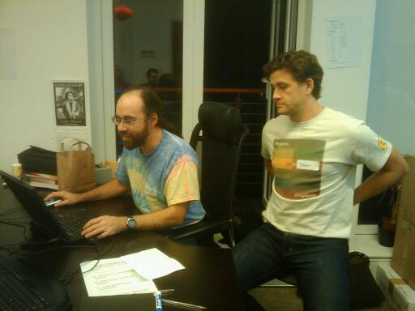

London Python Code Dojo
Yesterday evening we had our second code dojo.
About twenty attendees attempted to write a tic-tac-toe game and this time round we'd made some improvements:
- A comfortable OS, keyboard and mouse (no more Macbook)
- A simple editor (gEdit) – no intimidation from vim/emacs this time
- Starting from scratch (no need to learn an API)
- Stream of thought explanations from the pilot (well done everyone)
- Prizes! (Thanks to Josette from O'Reilly)
- A wider range of food (thanks Marcus and Fry-IT)
I personally think this dojo was better than the first for all sorts of reasons: we were better organised, the problem fitted better with the dojo "setup" and the stream of thought explanations from the pilots encouraged some great feedback, conversation and problem solving.
Although we didn't finish the problem I feel that this is a classic case of the journey being more important than the final destination.
Congratulations to Ciarán, Daniele and Menno on winning prizes (each pilot was encouraged to put their name into a prize draw "hat"). Ciarán got the O'Reilly book, Daniele won the only autographed copy of Iron Python in Action in existence (provided by the authors) and Menno went home with a book donated by Fry-IT by their business "muse" Ricardo Semler.
At the end we had a quick round-up session where we provisionally decided that the next London Code Dojo will be more of the same: at the offices of Fry-IT with the aim of finishing the tic-tac-toe game. We originally thought of running it on the on the third Thursday of each month, but I now realise this will clash with the Pyssup "social" event. As a result I propose we run it on the first Thursday of each month with the next one being on the 5th November at 6:30pm.
The next London Python Pyssup is happening next Wednesday (21st October, 7pm) at The Blackfriar near Blackfriars tube. Unfortunately I can't make it but it'd be a good opportunity for those of us who can to plan and discuss the next dojo.
Below are some photos I managed to snap:

Om nom nom…

The pizza didn't stand a chance

Dave (pilot) and Peter (co-pilot) hacking.